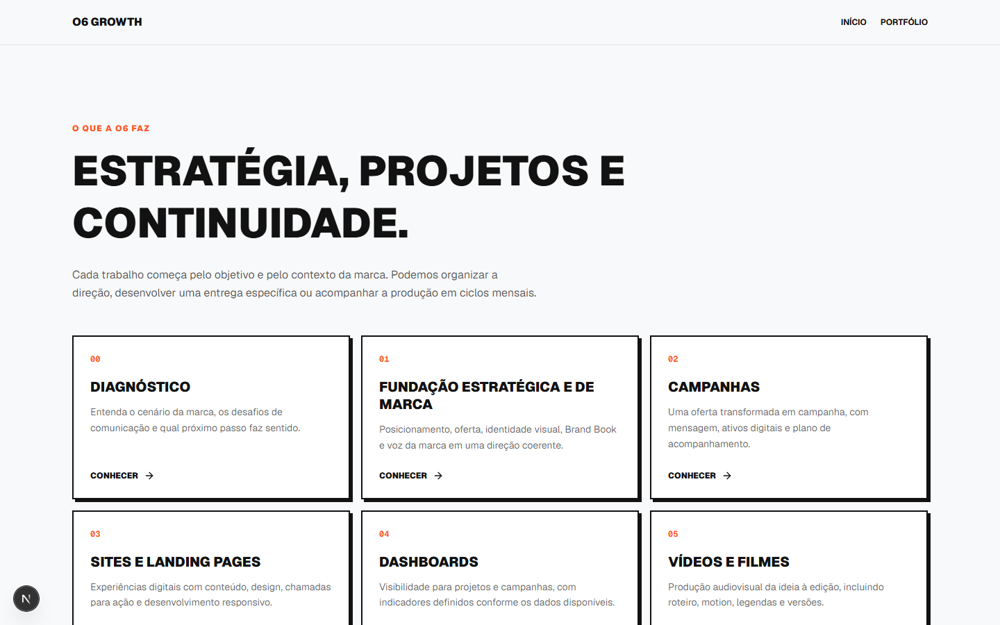

O6 GROWTH01 / 07
Busca e descoberta
Seu site pode ser encontrado. Mas ele é entendido?
SEO, AEO e GEO: o que essas siglas mudam para a sua empresa?
UMA PERGUNTA, TRÊS CAMINHOS
Encontrar → Entender → ConfiarO trabalho começa por uma página útil para pessoas reais.
O6 / IDEIAS QUE VIRAM PRESENÇAARRASTE →
O6 GROWTH02 / 07
01 / SEO
Ajude a busca a encontrar sua página.
Título claro, conteúdo útil, links e estrutura técnica.
BUSCA · EXEMPLO
“clínica de fisioterapia perto de mim”
Clínica Exemplo | FisioterapiaServiços, localização, contato e informações claras.
Exemplo ilustrativo. Não representa resultado real de busca.
ENCONTRARO6 GROWTH
O6 GROWTH03 / 07
02 / AEO
Responda às perguntas reais do cliente.
Explique sem rodeio o que você oferece e como funciona.
PERGUNTA FREQUENTE
“Como funciona a primeira consulta?”
Resposta na páginaEtapas, duração e como agendar, conforme a operação real.
Exemplo ilustrativo. O conteúdo precisa ser validado pela empresa.
RESPONDERO6 GROWTH
O6 GROWTH04 / 07
03 / GEO
Deixe claro quem é a sua marca.
Identidade, serviços e informações coerentes entre suas fontes públicas.
SITEO que você oferece
PERFIL PÚBLICOQuem é a empresa
CONTEXTO CONSISTENTEPessoas e sistemas conseguem compreender melhor o negócio.
Esquema conceitual; não garante citação por IA.
COMPREENDERO6 GROWTH
O6 GROWTH05 / 07
O que todos têm em comum
Uma base que faz sentido para gente de verdade.
01Conteúdo útil
02Site acessível
03Mensagem clara
04Informações confiáveis
A primeira pergunta é: quem chega ao seu site entende o que você faz?
O6 / BUSCA + COMUNICAÇÃO05 / 07
O6 GROWTH06 / 07
Sem promessa mágica
Uma boa estrutura melhora suas chances de ser compreendido.
Ninguém pode garantir a primeira posição no Google nem uma menção em respostas de IA. O trabalho começa com clareza, qualidade e acompanhamento.
PROCESSO + MEDIÇÃOO6 GROWTH
O6 GROWTH07 / 07
Comece pela sua página
Seu site explica o que você oferece e para quem?
A O6 conecta mensagem, design e estrutura para que sua presença digital seja clara desde o primeiro contato.

Quer conversar sobre o site da sua empresa? Envie uma mensagem para a O6.
O6 GROWTHVAMOS CONVERSAR ↗